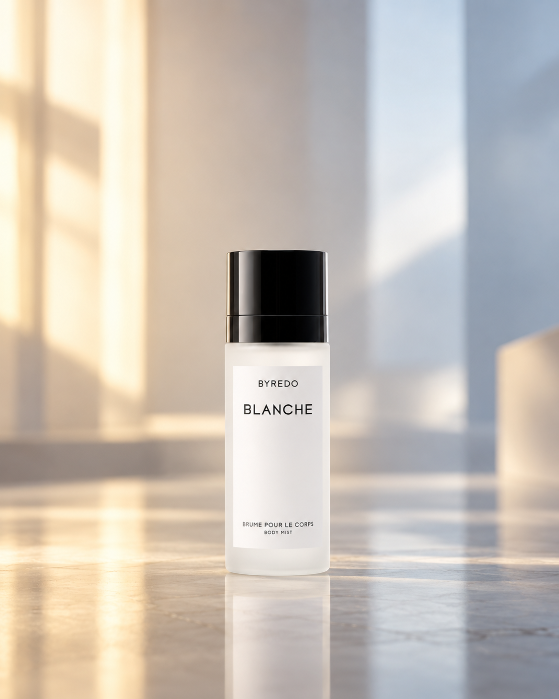
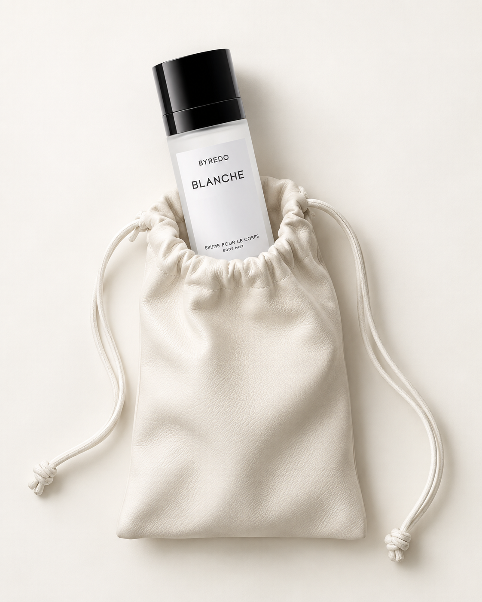
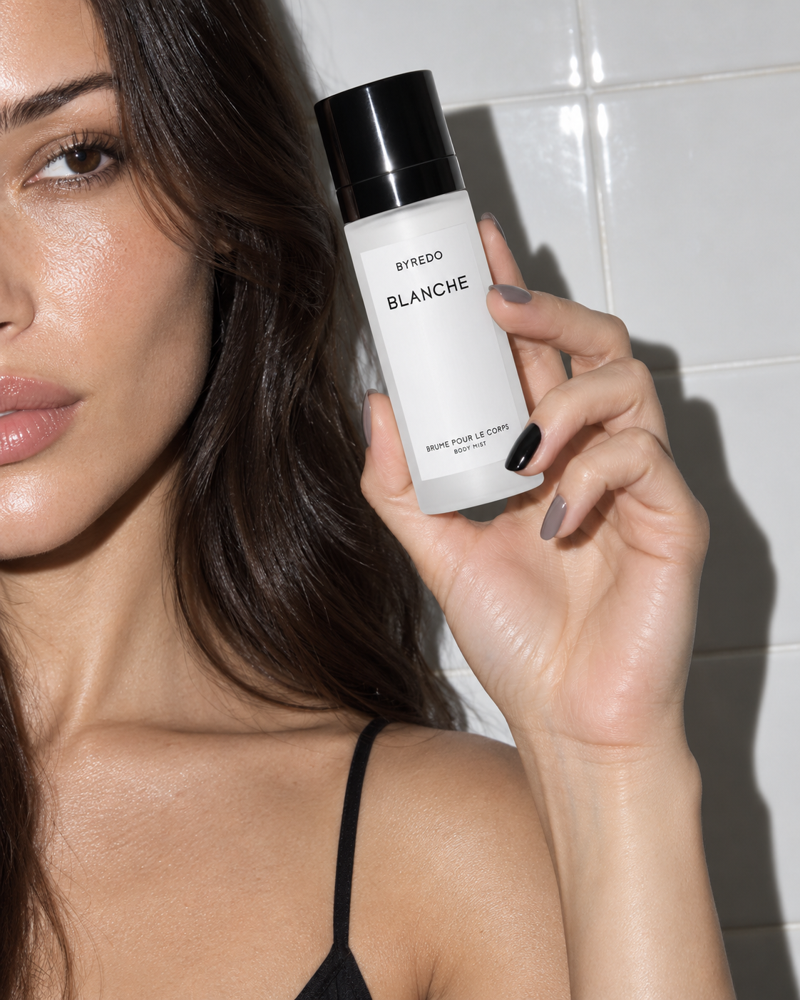

사용 방법
- 제품 사진 1장을 준비합니다 (라벨·로고가 잘 보이는 정면 컷 권장)
- ChatGPT 또는 Nanobanana에 이미지를 첨부합니다
- 아래 프롬프트를 복사해서 붙여넣기 후 전송합니다
- 필요에 따라 배경 분위기, 색온도, 소품 등을 추가로 지정할 수 있습니다
럭셔리 뷰티 캠페인 — 바디제품 연출컷
미니멀 하이엔드 에디토리얼 분위기로 제품을 재연출합니다.
제품 라벨·형태는 절대 변형 없이 그대로 유지하며, 배경과 조명만 새롭게 구성합니다.

▲ 프롬프트 출력 예시 — 제품 이미지 1장 업로드 후 생성한 결과물
Prompt — ChatGPT / Nanobanana
Create a premium luxury commercial product photograph using the uploaded product image as the sole product reference. Preserve the product exactly as shown in the reference image with no redesign, no label modifications, no logo changes, no text alterations, and no shape distortions. Rebuild the scene around the uploaded product while matching this specific aesthetic: a minimalist high-end editorial beauty campaign shot. Position the product perfectly upright and centered on a smooth reflective surface, occupying approximately 20–25% of the frame height with generous negative space surrounding it. The camera is placed at product height with a straight-on perspective, creating a clean and balanced composition. The background consists of a soft out-of-focus architectural environment with large translucent panels and subtle geometric forms, rendered as creamy gradients rather than identifiable objects. Introduce a warm golden glow entering from the left side of the frame and a cooler bluish daylight tone from the right side, creating a sophisticated warm-versus-cool color contrast. The product remains sharply in focus while the background falls into a smooth medium-format depth of field. Create realistic reflections beneath the product with soft falloff, natural contact shadows, and subtle environmental reflections on the product surface. Lighting should feel like a luxury fragrance, skincare, or premium cosmetic campaign, with large diffused scrims, soft edge highlights, controlled specular reflections, and clean shadow transitions. Preserve realistic proportions according to the uploaded product dimensions and automatically scale the composition around the product. The image must look naturally photographed rather than digitally composited, with physically accurate materials, realistic light behavior, premium retouching, and authentic surface reflections. Shot on a Phase One XF IQ4 150MP medium-format camera with a Schneider Kreuznach 120mm macro lens, focus stacked for maximum clarity, ultra-high dynamic range, luxury advertising photography quality, razor-sharp product detail, subtle cinematic depth, refined color grading, elegant minimalism, sophisticated editorial aesthetic, premium commercial campaign look, museum-quality sharpness, photorealistic rendering, 8K resolution, no extra props, no text overlays, no watermarks, no artificial effects, no excessive contrast, no AI artifacts, no floating objects, no distorted reflections, no warped packaging, only the uploaded product placed within this exact luxury lighting and environment.
파우치 플랫레이 연출컷
제품을 아이보리 가죽 드로스트링 파우치에 담아 플랫레이 스타일로 연출하는 프롬프트입니다.
여러 제품을 함께 넣어 레이어드 구성도 가능합니다.

▲ 프롬프트 출력 예시 — 파우치 플랫레이 스타일
Prompt — 파우치 플랫레이 / ChatGPT · Nanobanana
Create a premium minimalist luxury product photograph using the uploaded product image as the sole product reference. Preserve the product exactly as shown in the uploaded reference with no redesign, no label modifications, no logo changes, no color alterations, no text changes, and no distortion of shape or proportions. Recreate this exact composition: a soft ivory-white leather drawstring pouch placed vertically in the center of the frame against a seamless warm off-white studio background. The pouch should appear naturally filled and slightly gathered around the opening with realistic leather folds, subtle creases, soft shadows, and premium craftsmanship details. Position the uploaded product partially inside the pouch, emerging from the opening at approximately a 10–15 degree angle toward the left side, occupying the same visual dominance as the original reference. If multiple uploaded products are provided, place the secondary product partially visible behind the primary product, emerging from the pouch opening at a slightly opposing angle to create a layered luxury editorial composition. Maintain realistic scaling according to the true dimensions of the uploaded products rather than forcing them into the original proportions. The pouch should gently wrap around the products with believable contact points and natural fabric tension. Include soft white drawstrings extending from the pouch opening, loosely draping downward and forming organic curves across the lower portion of the frame, ending with a subtle knot detail. Lighting should be soft luxury e-commerce/editorial lighting with large diffused overhead scrims and bounce cards, creating delicate shadows, smooth tonal transitions, controlled highlights, and premium texture definition. The background must remain completely clean and distraction-free with subtle tonal variation only, no props, no furniture, no additional styling elements, and no visible horizon line. Camera angle is directly overhead with a perfectly flat lay composition, maintaining symmetry and clean negative space around the pouch. The final image should feel like a high-end beauty, fashion accessory, fragrance, or luxury lifestyle campaign. Shot on a Phase One XF IQ4 150MP medium-format camera with a Schneider Kreuznach 120mm macro lens, focus stacked, ultra-high resolution, museum-quality sharpness, premium commercial retouching, realistic material rendering, physically accurate shadows, authentic leather texture, clean luxury aesthetic, sophisticated editorial styling, subtle depth, natural highlights, photorealistic product integration, 8K advertising quality, no AI artifacts, no warped packaging, no floating objects, no distorted reflections, no excessive contrast, and absolutely no cut-and-paste appearance. The final image should look like an original luxury brand campaign photograph professionally art directed and captured in a premium commercial studio.
모델 라이프스타일 연출컷
모델이 제품을 손에 들고 있는 뷰티 캠페인 스타일의 라이프스타일 컷입니다.
플래시 직광 조명으로 하이패션 에디토리얼 느낌을 연출합니다.

▲ 프롬프트 출력 예시 — 모델 라이프스타일 스타일
Prompt — 모델 라이프스타일 / ChatGPT · Nanobanana
Using the uploaded product image as the sole product reference, recreate a luxury beauty-campaign lifestyle photograph with the exact composition, framing, mood, pose, lighting style, and premium editorial aesthetic of the reference image. Feature a female model cropped closely so only part of the face is visible along the left edge of the frame, showing smooth healthy skin, glossy dark brunette hair cascading naturally over the shoulder, and a thin black camisole strap visible on the shoulder. The model should hold the referenced product in her right hand beside her face at approximately eye level, gripping it delicately between the thumb and fingers with elegant beauty-advertising hand positioning. Match the exact product angle from the reference: slightly tilted inward toward the face, label facing camera and fully readable, naturally scaled according to the uploaded product dimensions. The hand should display professionally manicured nails painted in a sophisticated muted grey tone with one accent nail in glossy black. Background should be a clean white ceramic tiled wall with subtle grout lines, resembling a premium modern bathroom or backstage beauty environment. Use direct on-camera flash photography to create the distinctive high-fashion beauty-editorial look: bright frontal illumination, crisp highlights on skin and packaging, sharp shadow projection falling dramatically onto the tiled wall behind the hand and product, and strong contrast between illuminated and shadowed areas. Preserve realistic skin texture, natural hair detail, authentic hand anatomy, accurate nail reflections, and physically correct product reflections. The composition should feel candid yet highly art-directed, resembling a luxury beauty campaign shot captured during a styling or finishing-touch moment. Camera framing should be vertical portrait orientation, tightly cropped, with the product occupying the upper-center area and the model's shoulder anchoring the lower-left portion of the image. Materials must appear hyperrealistic: glossy product finish, natural skin sheen, soft hair texture, realistic ceramic tile surface, and true-to-life shadows. Shot on a Phase One XF IQ4 150MP medium-format camera with an 80mm portrait lens, luxury commercial beauty photography, magazine-quality retouching, ultra-high-resolution detail, premium skincare and cosmetics advertising aesthetic, clean composition, non-AI appearance, realistic proportions, no extra accessories, no distracting elements, no text overlays beyond the referenced product packaging, and flawless professional campaign quality.
활용 팁
- 제품 배경색이나 전체 분위기를 바꾸고 싶다면 프롬프트 마지막에 원하는 색감이나 무드 키워드를 추가하세요
- 여러 제품을 함께 배치하려면 "Include [제품명] alongside the primary product" 문구를 추가하세요
- 배경 계절감을 주고 싶다면 "with soft winter light", "summer sun flare from upper left" 등을 삽입하세요
- Nanobanana 사용 시 Reference Image 슬롯에 제품 이미지를 넣고 프롬프트를 입력하세요